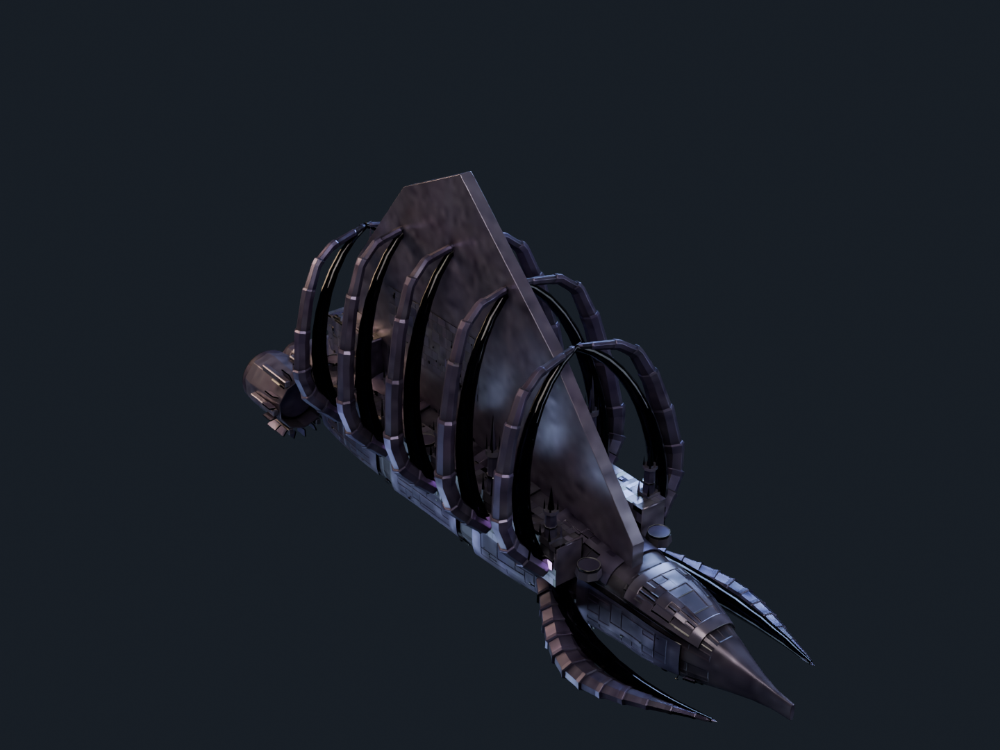
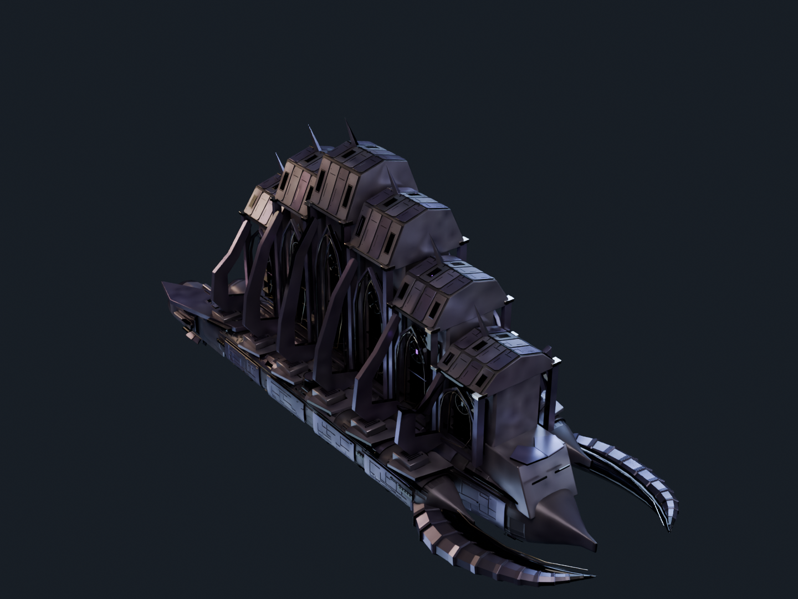

The earlier study
Preserved for a direct comparison. The broad sail and repeated kit forms prompted this rebuild.
Amethyst Angels · Battleship · 1,000 metres

Six stepped citadel bays carry gabled armour above open lancet frames. Recessed galleries, rose tracery and occupied decks sit behind the facade; shaped flying buttresses connect it to protected side aisles. A split ceremonial ram and shielded engineering section complete the hull.

Preserved for a direct comparison. The broad sail and repeated kit forms prompted this rebuild.

The existing cloud-authored Savanah Apex, in the same lighting. Its authorship remains separate from this new design.